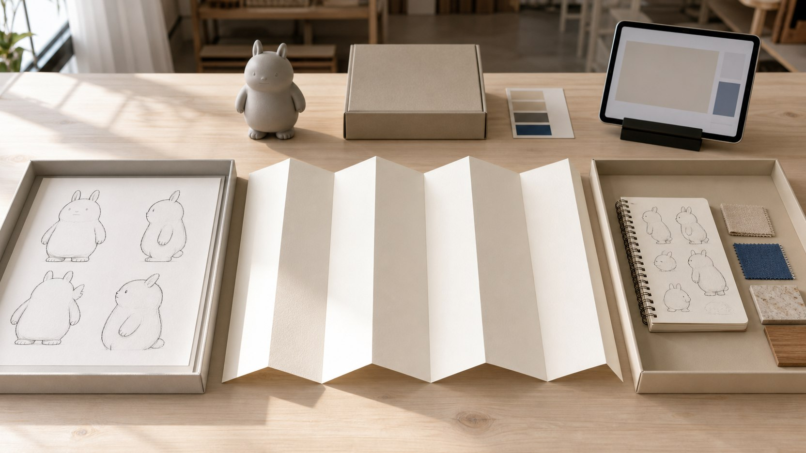
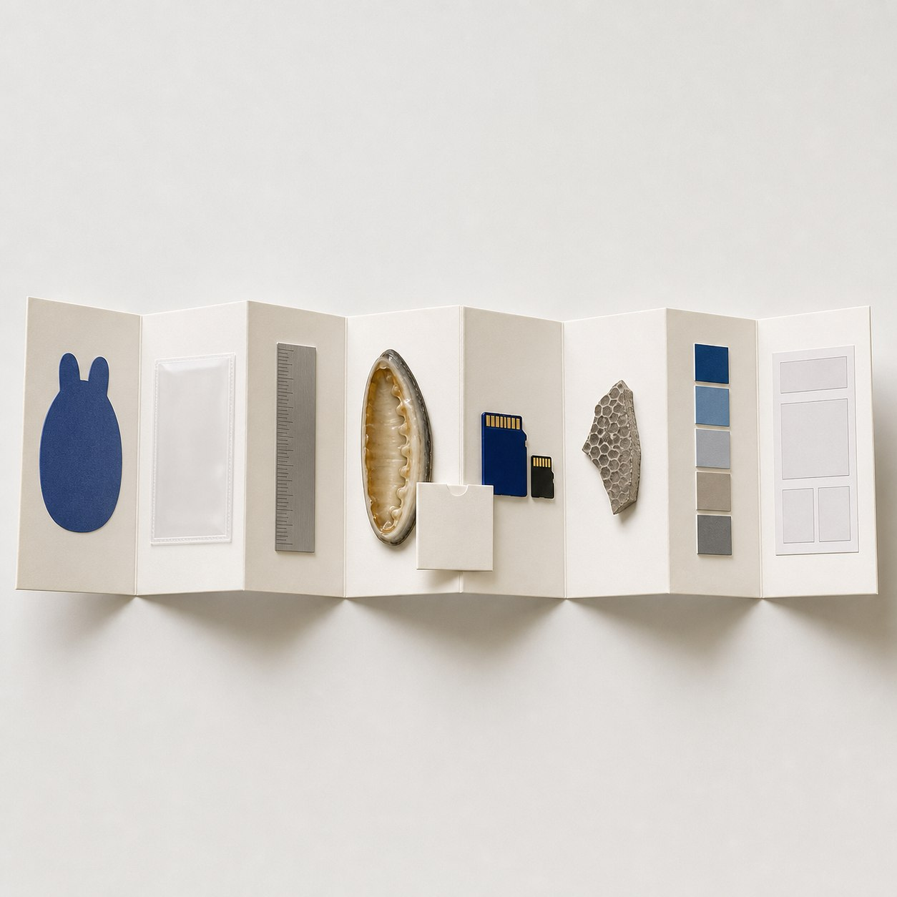
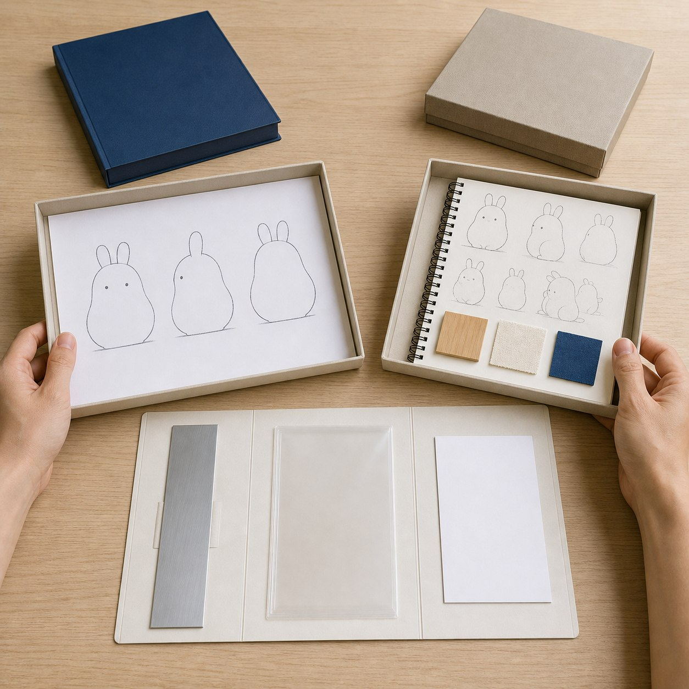

7 月咨询最多的 8 个问题
报名前的疑问往往跨越不同阶段：没有成熟原画能不能开始，AI 初模能不能直接打印，GLB 和 STL 为什么要分开，作品应该做多大，五天究竟完成到哪一级，小班与一对一支持如何安排。

具体问题
报名前的疑问往往跨越不同阶段：没有成熟原画能不能开始，AI 初模能不能直接打印，GLB 和 STL 为什么要分开，作品应该做多大，五天究竟完成到哪一级，小班与一对一支持如何安排。若把这些问题拆成孤立的工具问答，就会看不见它们共同受项目范围、版本、设备与四道 Gate 约束。
当天日历标题是“7 月咨询最多的 8 个问题”，但本次内容任务没有读取腾讯问卷后台、聊天记录、咨询统计或个人数据。因此，本文保留既定标题，同时把八问明确限定为依据公开课程基线与近期内容整理的报名前决策清单；问题顺序不代表真实咨询量排名，也不用于制造报名热度。
核心判断
一项合格回答至少要包含五个部分：对应哪一天与哪道 Gate，需要检查什么文件、实物或记录，什么条件允许进入下一阶段，条件不足时怎样修正或降级，以及哪些结果不在五天承诺内。只有同时回答这些内容，问答才可以被用于准备和验收。
据此，八问可以归为四组：起点与范围，AI、人工和双文件分工，尺寸与完成度，产能、支持和报名边界。它们的共同结论是：五天课程建立的是第一版可继续发展的项目闭环，不是自动生成、统一规格、固定成品数量或商业结果的保证。
步骤或标准
可在报名或准备项目前逐项完成以下八项核对。每项都应写下当前事实、缺失信息与下一步，不用“应该没问题”代替检查。
- 起点：已有 IP / 角色资产者整理原画、设定、三维文件与版权状态；只有想法、草图或初步设定者整理故事、关键词、参考方向和希望做成的物品。
- 五天结果：把项目卡、视觉输入、受控模型、GLB / STL、灰模或局部样、表达资料与独立站按基础、标准、进阶出口理解，不预设人人得到同一成果包。
- AI 与人工：AI 用于辅助视觉输入和三维初模；比例、破面、薄弱结构、重心、拆件、装配与可打印性由人工修正和 Gate 2 复核。
- 双文件：GLB 在目标网页或查看器验证加载、材质和交互；STL 按真实毫米尺寸在切片环境检查封闭、厚度、连接、拆件与支撑；两者保持版本对应。
- 尺寸：把 8—12cm 作为首次闭环建议范围，按完整姿态外接尺寸、材料工艺、关键细节、打印与后处理排程决定是否加厚、拆件或改为局部样。
- 完成度：用 Gate 1—4 的文件、样件、版本和问题记录判断基础、标准或进阶出口；未通过时退回修正或降级，不用精修成品作为唯一完成标准。
- 产能与支持：按完整打印任务、清洗固化、后处理、失败重试和关键节点支持核算；每班限 10 人是可调度条件，不是固定日产量或无限代做承诺。
- 报名：只通过公开表单提交真实起点、目标与设备信息；提交后仍需人工确认，不能把表单提交写成席位、付款、完成等级或项目方案已经确定。
常见错误
以下错误会把报名前核对变成不准确的招生话术，并把风险推迟到课程或制造阶段。
- 把“咨询最多”解释成已有后台统计和热度排名；后果是虚构了未读取、未验证的咨询数据。
- 把八个回答改写成八项人人相同的结果保证；后果是忽略起点、结构、设备、排程与 Gate 证据造成的完成度差异。
- 把 AI 初模、渲染图或当天示意图写成可打印模型、学员案例或真实成果；后果是结构风险与事实边界被隐藏。
- 把小班和一对一支持写成无限代做或固定时长；后果是误导参与者对责任分工与真实产能的预期。
- 只保留报名链接，删除完成度与不承诺事项；后果是参与者无法在提交前判断课程范围和后续投入。
与五天课程的关系
八问覆盖 Day 1 至 Day 5。Day 1 / Gate 1 处理两类起点、版权、视觉输入、尺寸与主 / 备 / 降级方案；Day 2 / Gate 2 处理 AI 初模、Nomad 人工修模、GLB / STL 和可打印检查；Day 3 / Gate 3 处理切片、打印、灰模或局部样的实体验证。
Day 4 / Gate 4 核对涂装状态、包装方向、产品信息、图片、版权和成果描述，Day 5 再把当前真实结果整理进个人独立站、GLB 在线展示、平台文案和 30 天推广计划。
完成本阶段后，下一阶段是课后 30 天迭代：按问题清单修正模型、补充素材与页面，再评估正式包装、批量复制、展览或销售准备。
事实 / 案例 / 完成度边界
本文依据公开课程基线、当天日历条目和最近七天的文章与归档整理，未读取问卷后台、聊天记录、咨询统计或个人数据。当天三张图片只用于示意两类起点、八项核对和文件—实物—发布关系，不是学员案例、真实咨询现场、真实课堂或制作成果。真实案例只有在来源、授权、版本和完成状态可核验时才能单独标注；示意图不能替代真实案例。
五天内的目标是按项目实际情况形成第一版可继续发展的文件、验证样和表达资料，可能采用基础、标准或进阶出口。完成度受起点、结构复杂度、尺寸、设备、材料、打印排程和修正次数影响。课程不承诺人人完成商业级精修、一次打印成功、正式包装印刷、批量生产、正式展览、授权成交或销售，也不承诺固定实体件数、固定一对一时长或统一完成等级。
报名入口
如果你已有 IP / 角色资产，可以在报名资料中说明现有原画、角色设定或三维文件、版权状态、希望保留的辨识点、实体用途和当前最需要验证的问题；不需要先独自完成整条生产链。
如果你只有想法、草图或初步设定，也可以如实说明故事、关键词、参考方向、希望做成的物品和现有设备，不需要把早期想法包装成成熟项目。两类起点都会从 Day 1 的范围与 Gate 1 判断开始。公开报名地址：https://wj.qq.com/s2/27296919/9499/ 。提交资料不等于席位、付款、完成等级或项目方案已经最终确认。


课程时间：2026 年 10 月 2 日至 10 月 6 日｜青岛｜每班限 10 人
填写报名资料 →